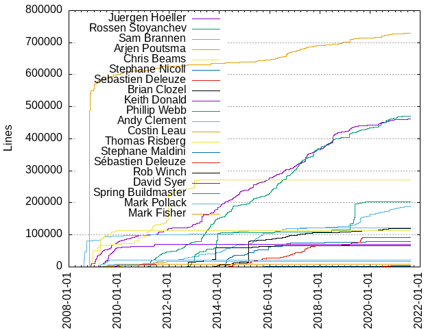
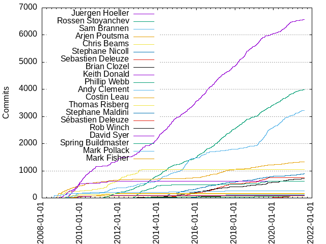

Authors
| Author | Commits (%) | + lines | - lines | First commit | Last commit | Age | Active days | # by commits |
|---|
| Juergen Hoeller | 6576 (28.94%) | 461428 | 496633 | 2008-10-24 | 2021-07-23 | 4655 days, 0:17:06 | 1534 | 1 |
| Rossen Stoyanchev | 3986 (17.54%) | 470907 | 224262 | 2009-03-07 | 2021-08-03 | 4532 days, 10:22:24 | 1540 | 2 |
| Sam Brannen | 3228 (14.21%) | 189299 | 130674 | 2009-04-28 | 2021-07-31 | 4477 days, 15:41:05 | 1174 | 3 |
| Arjen Poutsma | 1336 (5.88%) | 728792 | 87799 | 2008-10-21 | 2021-07-13 | 4648 days, 3:38:39 | 634 | 4 |
| Chris Beams | 1049 (4.62%) | 270734 | 202603 | 2008-11-24 | 2014-11-13 | 2179 days, 11:46:29 | 331 | 5 |
| Stephane Nicoll | 893 (3.93%) | 78993 | 19353 | 2014-01-08 | 2021-08-09 | 2769 days, 22:30:33 | 523 | 6 |
| Sebastien Deleuze | 743 (3.27%) | 91641 | 24383 | 2014-02-05 | 2019-10-27 | 2090 days, 2:48:32 | 433 | 7 |
| Brian Clozel | 703 (3.09%) | 120346 | 95352 | 2013-09-24 | 2021-06-09 | 2814 days, 21:17:35 | 432 | 8 |
| Keith Donald | 619 (2.72%) | 70753 | 51104 | 2009-03-06 | 2011-09-13 | 920 days, 19:23:08 | 137 | 9 |
| Phillip Webb | 616 (2.71%) | 202441 | 189965 | 2012-06-22 | 2021-01-28 | 3141 days, 23:33:27 | 254 | 10 |
| Andy Clement | 260 (1.14%) | 121776 | 81377 | 2008-08-11 | 2020-09-05 | 4407 days, 10:42:06 | 113 | 11 |
| Costin Leau | 172 (0.76%) | 16517 | 12601 | 2008-11-25 | 2012-01-06 | 1136 days, 17:51:32 | 82 | 12 |
| Thomas Risberg | 158 (0.70%) | 113985 | 29904 | 2008-11-07 | 2017-01-06 | 2982 days, 1:13:37 | 79 | 13 |
| Stephane Maldini | 115 (0.51%) | 3180 | 3026 | 2015-04-23 | 2019-06-26 | 1524 days, 7:03:09 | 69 | 14 |
| Sébastien Deleuze | 98 (0.43%) | 5050 | 950 | 2018-12-26 | 2021-06-30 | 916 days, 21:42:50 | 50 | 15 |
| Rob Winch | 89 (0.39%) | 67260 | 73814 | 2012-07-10 | 2020-01-24 | 2754 days, 20:37:48 | 65 | 16 |
| David Syer | 88 (0.39%) | 9039 | 4034 | 2009-10-26 | 2011-12-09 | 773 days, 12:59:50 | 38 | 17 |
| Spring Buildmaster | 75 (0.33%) | 77 | 77 | 2012-05-28 | 2021-07-14 | 3333 days, 10:25:38 | 67 | 18 |
| Mark Pollack | 75 (0.33%) | 21998 | 14526 | 2009-03-07 | 2010-05-10 | 429 days, 11:51:06 | 40 | 19 |
| Mark Fisher | 72 (0.32%) | 8155 | 1308 | 2009-05-08 | 2011-06-03 | 756 days, 0:22:14 | 38 | 20 |
These didn't make it to the top: Johnny Lim, Andy Wilkinson, Violeta Georgieva, sdeleuze, Ben Hale, Scott Andrews, igor-suhorukov, Сергей Цыпанов, stsypanov, Oliver Gierke, Qimiao Chen, Sviatoslav Hryb, Rob Harrop, nkjackzhang, Ramnivas Laddad, Philippe Marschall, Christian Dupuis, Kazuki Shimizu, Christoph Dreis, izeye, diguage, Stevo Slavic, Mark Paluch, Luke Taylor, Jay Bryant, 陈其苗, Marten Deinum, Jeremy Grelle, Gary Russell, Michael Isvy, Hyunjin Choi, Yanming Zhou, XenoAmess, Vedran Pavic, Dave Syer, Spring Operator, Nick Williams, Kamil Szymanski, Craig Andrews, www, GungnirLaevatain, wonwoo, fengyuanwei, Toshiaki Maki, Tadaya Tsuyukubo, Pascal Schumacher, Micha Kiener, Lars Grefer, Eddú Meléndez, Drummond Dawson, Dmitry Katsubo, Colin Sampaleanu, Biju Kunjummen, 康智冬, youmoo, stonio, soldierkam, fisache, Roy Clarkson, Rebwon, Oleksandr Kravchuk, May, Martin Macko, Greg Turnquist, Carson McDonald, Artem Yakshin, lixiaolong11000, heqiang, arman simonyan, Yoo In Keun, Vlad Kisel, Venil Noronha, Taemin Shin, QBNemo, Nelson Osacky, Michael Irwin, Marek Hawrylczak, Lukasz Kryger, Lonre Wang, Jakub Narloch, Issam El-atif, Ilya Lukyanovich, Grzegorz Rożniecki, Gary Hale, Fredrik Sundberg, Ezequiel Ballesi, Alex Yursha, 0xflotus, yilianhuaixiao, xuxiang, limo520, jerzykrlk, hyeonisism, hengyunabc, denisgalaybo, cac03, arturgspb, ZhangT, Yoann Rodière, Vasyl Tretiakov, Tomasz Nurkiewicz, Tomasz Letachowicz, Thor Andreas Rognan, Stéphane Nicoll, Sanghyuk Jung, Ruslan Akhundov, Ruben Dijkstra, Riley Park, Phani Kandula, Parviz ROzikov, Oleg Atamanenko, OLPMO, Napster, Muhammad Hewedy, Michał Rowicki, Michael Simons, Michael J. Simons, Mattias Severson, Markus Malkusch, Mark Hobson, Mario Arias, Krzysztof Kosmatka, John Lin, Jason Zhekov, Janning Vygen, Jan Nielsen, Jan Machacek, Grant Hutchins, Glyn Normington, GardenLee, Erik van Paassen, Eric Bottard, Eitan Adler, Denis Zavedeev, David Harrigan, Daniel Fernández, Craig Walls, Brian Hartung, Artem Bilan, Arnaud Cogoluègnes, Andrew McCallum, Andreas Ahlenstorf, Alex Panchenko, Alex Antonov, Agim Emruli, 황준오, 부종민, 방성범 (Bang Seongbeom), 陈灵敏, 王诗峣, 水木今山, 横云断岭, 桂坤, 李全城, zyan, zilong6, zhuzhuman978, zheng.ren01@mljr.com, yokotaso, yanghuai9, xueyua, xiexed, wolverine.kim, wilrosco, wenqi.huang, wanxiangming1994, vspac, volkovandr, valery1707, unpush, ugultopu, twhitmorenz, tristeza, tianjunwei, thanus, tamkylet, takumi34, sylvainlaurent, swapy, stqp, spodgurskiy, sokomishalov, sn42, slawluc, skarafaz, shevtsiv, schjan79, sada-sigsci, ryenus, rlindooren, rahulmlokurte, perceptron8, pelladigabor, onnadi-sa, olszewskimichal, nyo, nullzl, nhavuong, ndebeiss, nara, mplain, monosoul, mnhock, mmoores, mhartsock Melissa Hartsock, mgooty, mfeng-ya, mdindoffer, md42, maxxedev, matthew-pearson, mattbertolini, martin-tarjanyi, madorb, lwjli, logicg8, liym@home, liym@com, liym, liuhy365, lijuny, liguoxiong, leizhiyuan, ladislav-bozek, kudrevatykh, kosmaty, k3v1n, jmaxwell, jianglei, jbotuck, jasdeepgill, james, jacopo-salamina, i321222, hzmpay, hupfis, hunjipo, holub, hasheniuk, giovannidalloglio, gaerfield, freeman0432, figueroaRicardo, eujung kim, eXsio, dzou, duan847, drgnchan, douddle, dmrachkovskyi, dlsrb6342, diesieben07, devorio, daisuzz, clemp6r, chrunchyjesus, chenqimiao, chendayu, cbaldwin74, benoit, bedrin, asympro, ascopes, armansimonyan13, areshetnikov, anton_bondarenko, anton0xf, andrm, alexscari, akarnokd, adamlehenbauer, Yusuke Yamamoto, Yun, YuDongYing, York Lee, Yi EungJun, Yannik Hampe, Xiaolong Zuo, Xavier Downs, Wilder Pereira, Wesley Hall, Wang Xuesong, Wang Jingyu, VonUniGE, Vojtech Janota, Vladimir Sitnikov, Vladimir L, Vitalii Rastvorov, Vitalii Ananev, Vitalii, Vikash Tiwari, Vedran Pavić, Vasiliy Kudriavtsev, Valentin, Usman, Undefined, Udo Kohlmeyer, Tony Mitchell, Tomo Suzuki, Tomasz Linkowski, Tomas Drabek, Tom van den Berge, Tom Mack, Tom Fitzhenry, Tokuhiro Matsuno, Tobias Stoeckmann, Tobias Montagna-Hay, Timo Meinen, Tim Meighen, Thomas Girard, Tasuku Nakagawa, Taehee Kim, Syuziko, Sylwester Niewczas, Sylvain Lemoine, Sviatoslav, Sungho Hwang, Stéphane GRILLON, Steven Schlansker, Stefan Penndorf, Stefan Ferstl, Stas Volsky, Spindler, Justin, Sola, Sokrato, Skelotron, Siva Prasad Valluru, Simon Bowring, ShindongLee, Shenker93, ShaoqiangLu, Sergey Galkin, Sergey Chupov, Sergey, Sergei Ustimenko, Seo, Kyung-Seok, SchutzeHades, Scheidter,Ryan, Sauhard Sharma, Satyapal Reddy, Sangwoo Lee, Sang Gi Ryu, Sammy Chu, Sam Hubbard, Rüdiger Schulz, Rémi Alvergnat, Ryan Yin, Ryan Skow, Ryan Scheidter, Ryan Pickett, Ryan O'Meara, Ryan Burke, RustyTheClone, Ruslan Stelmachenko, Ruslan Sibgatullin, Ruslan Pistriak, Rostislav Svoboda, Roland Weisleder, Rohit Pandey, Robin Wang, Robin Roos, Robert Gründler, Rob Tompkins, Ritesh Rathore, Renato Soppelsa, Raman Gupta, Ralph Schaer, Radosław Józwik, PyvesB, Pier Dipi, Philippe De Neve, Philipp Grogg, Phil Webb, Petr Janecek, Periklis Ntanasis, Paul Warren, Paul Verest, Patrick0308, Pat Turner, P. Ottlinger, Ondrej Kraus, Oliver Degener, Oliver Becker, Oleksii Klochko, Oleksandr Hasheniuk, Oleh Faizulin, Oleg Zhurakousky, Oleg Lomaka, Oleg Kalnichevski, Norman Soetbeer, Nikola Kolosnjaji, Nikita Tovstoles, Niconal, Nicolas Labrot, Nicofisi, Nico Heller, Nickloas, Nicklas Holm, Nick Hitchan, Neonailol, NaNRailgun, Mykola Fadieiev, Mustafa Ulu, Moran Avigdor, Moncef AOUDIA, Minho Hwang, Min-soo, Min Ho Pak, Mike Krumlauf, Mikael Elm, Mikael, Mihai Dumitrescu, Michel ten Voorde, Michel Schudel, Michal Stehlik, Michal Karolik, Michael Edwards, Michael Bell, Maxim Valyanskiy, Mattison chao, Matthias Kurz, Matt Sicker, Mateusz Swiatkowski, Masayasu Yamamoto, Masahiro Ide, Martin Švorc, Martin Lippert, Martin Knopf, Mark Galea, Mark Chesney, Mariusz Jasinski, Marius Grama, Marcin Mielnicki, Mansur Mustaquim, Maksim, MaengSol, Maciej Ziarko, Maciej Miklas, Lukas Krecan, Luciano Leggieri, Loïc Ledoyen, Lorenzo Torracchi, Lifu Zhou, Lea Farmer, Kyle Carter, KwonJH, Kwon Young Jae, Kwangyong Kim, Kunal Patel, Kris De Volder, Korovin Anatoliy, Koos Gadellaa, Konstantin Petrukhnov, Konrad Kamiński, Koen Serneels, Kirill Serebrennikov, Kirill Gavrilov, Kim Saabye Pedersen, Ketan Padegaonkar, Ken Dombeck, Kei KATO, Kazuki Miyahara, Kazuki MATSUDA, Kazuhiro Sera, KateVasovski, KangZhiDong, Kang Baek-kyu, Kamill Sokol, Kalmesh Sambrani, K, Jussi Hallila, Jupiter, JungHoon, Lee, Juhyoung Jeon, João Pedro Evangelista, Josh Long, Josh King, Josh Cummings, Jorg Heymans, Jonathan Bluett-Duncan, Jon Borenstein, JohnGrib, John Tims, John S. Ryan, John Ryan, John Feminella, John, Johannes Teklote, Johannes Edmeier, Jinsoo Park, Jinghu Wang, Jerzy, Jeremy Wright, Jeon Ilwoong, Jeoffrey Haeyaert, Jennifer Hickey, Jendrik Johannes, Jeff Nelson, Jasper de Vries, Jason Yu, Jan-Espen Oversand, Jan Stamer, Jacob Severson, Ivo Smid, Issam EL-ATIF, Ippei Nawate, Ilja, Igor Suhorukov, Igor Mukhin, Igor Manushin, Ian Chan, Ian Brandt, Hyeonmin Park, Hubert Wo, Hronom, Honnix, HejiaHo, HeemangHan, Hasan Kara, Haruki Okada, Hanope, Hannes Metssalu, Gyllsdorff, Gurps Bassi, Guilherme Alan Ritter, Gregory Vandenbroucke, Graham Lea, Gildas Cuisinier, Gediminas Rimša, Gaurav Deshpande, Gareth Davis, Gabriel Axel, Gabriel, Frederik Boster, François Guillot, Frank Scheffler, Francesco Komauli, Florian Kirmaier, Florian Berger, Filip Hrisafov, Ferdinand Jacobs, Felix, Fedor Bobin, Fabrizio Cucci, Evgenii Koba, Esko Luontola, Erik Olsson, Eric Weinberg, Eric Pabst, Eric Jain, Eric Hettiaratchi, Eric Helgeson, Eric Deandrea, Eric Dahl, Elvys Soares, Elizabeth Chatman, Eko Kurniawan Khannedy, Eiichi Sato, D瓜哥, Dávid Karnok, Dzmitry Kabysh, Dridi Boukelmoune, DongHyuk, Do Nhu Vy, Dmytro Nosan, Dimitrios Liapis, Dimitrios (Dimi) Liapis, Dillon Regimbal, Diego Castro, Deycoesr, Dennis Kieselhorst, Deline Neo, Dekel Pilli, David Tombs, David J. Biesack, David Harkness, David Haraburda, David Brimley, Dave Brosius, Dapeng, Daniel Le, Daniel Kift, Damiano Albani, DamianChlod, DK Lee, Cory Klein, Connor Lin, Clément Plantier, Christophe Maillard, Christian Kulpa, Chris Harding, Chin Huang, Chexpir, Chen Dayu, Carter Kozak, Carsten Dimmek, Bryce Yang, Bryan Kelly, Bronwyn Perry-Huston, Brian Westrich, Brian Bohl, Brandon Fergerson, Bian Jiaping, Bhavani Shekhawat, Bertrand Guay-Paquet, Benjamin Faal, Ben Manes, Beca-se, Bao Tran, Aviskar Basnet, Astushi Yoshikawa, Artsiom Chapialiou, Arjan van Bentem, Arend v. Reinersdorff, Antonio Marrero, Anton Lyxell, Anton Bobov, Anton, Anthony Raymond, Angel Aguilera, Andrzej Leśkiewicz, Andriy Kryvtsun, Andrey Kolchanov, Andrey Kaipov, Andrew Woodbury, Andrew Tulloch, Andrew Flower, Andreas Volkmann, Andreas Kluth, Andreas Killaitis, Andreas Asplund, Anders D. Johnson, Anatoliy Korovin, Amey Jadiye, Allon Mureinik, AlexeyAnufriev, Alexey Nikolaenko, Alexej Timonin, Alexander Sparkowsky, Alexander Riss, Alexander Münch, Alex Feigin, Aleksey Voronenkov, Alan Hong, Adrian Cole, Adib Saikali, Aakarshit Uppal
Only top 20 authors shown
Only top 20 authors shown
| Month | Author | Commits (%) | Next top 5 | Number of authors |
|---|
| 2021-08 | Stephane Nicoll | 4 (57.14% of 7) | izeye, Syuziko, Rossen Stoyanchev | 4 |
| 2021-07 | Juergen Hoeller | 17 (21.52% of 79) | Sam Brannen, Stephane Nicoll, Rossen Stoyanchev, Arjen Poutsma, Yanming Zhou | 14 |
| 2021-06 | Sam Brannen | 22 (30.14% of 73) | Sébastien Deleuze, Rossen Stoyanchev, Juergen Hoeller, Sviatoslav Hryb, Brian Clozel | 19 |
| 2021-05 | Sam Brannen | 39 (39.80% of 98) | Rossen Stoyanchev, Juergen Hoeller, Stephane Nicoll, Arjen Poutsma, Brian Clozel | 21 |
| 2021-04 | Sam Brannen | 23 (22.77% of 101) | Sviatoslav Hryb, Stephane Nicoll, Rossen Stoyanchev, Arjen Poutsma, Juergen Hoeller | 22 |
| 2021-03 | Rossen Stoyanchev | 21 (22.34% of 94) | Juergen Hoeller, Sam Brannen, Stephane Nicoll, Brian Clozel, Arjen Poutsma | 22 |
| 2021-02 | Sam Brannen | 51 (36.17% of 141) | Rossen Stoyanchev, Juergen Hoeller, Stephane Nicoll, Sébastien Deleuze, Brian Clozel | 24 |
| 2021-01 | Rossen Stoyanchev | 35 (33.98% of 103) | Sam Brannen, Arjen Poutsma, Juergen Hoeller, Brian Clozel, Sébastien Deleuze | 20 |
| 2020-12 | Juergen Hoeller | 17 (25.37% of 67) | Rossen Stoyanchev, Sam Brannen, Brian Clozel, Arjen Poutsma, Sébastien Deleuze | 15 |
| 2020-11 | Juergen Hoeller | 44 (31.21% of 141) | Rossen Stoyanchev, Sam Brannen, Sébastien Deleuze, Сергей Цыпанов, Arjen Poutsma | 20 |
| 2020-10 | Juergen Hoeller | 56 (27.05% of 207) | Rossen Stoyanchev, Sam Brannen, Sébastien Deleuze, Brian Clozel, Stephane Nicoll | 20 |
| 2020-09 | Juergen Hoeller | 67 (39.18% of 171) | Rossen Stoyanchev, Sam Brannen, Brian Clozel, Stephane Nicoll, Arjen Poutsma | 16 |
| 2020-08 | Juergen Hoeller | 55 (32.35% of 170) | Sam Brannen, Rossen Stoyanchev, Stephane Nicoll, Brian Clozel, diguage | 21 |
| 2020-07 | Sam Brannen | 40 (27.97% of 143) | Juergen Hoeller, Rossen Stoyanchev, XenoAmess, Brian Clozel, Arjen Poutsma | 18 |
| 2020-06 | Sam Brannen | 73 (34.11% of 214) | Juergen Hoeller, Rossen Stoyanchev, Arjen Poutsma, Sébastien Deleuze, Brian Clozel | 23 |
| 2020-05 | Rossen Stoyanchev | 60 (32.09% of 187) | Sam Brannen, Juergen Hoeller, Brian Clozel, Yanming Zhou, Arjen Poutsma | 21 |
| 2020-04 | Sam Brannen | 46 (33.33% of 138) | Juergen Hoeller, Brian Clozel, Rossen Stoyanchev, Sébastien Deleuze, Stephane Nicoll | 27 |
| 2020-03 | Sam Brannen | 42 (24.71% of 170) | Rossen Stoyanchev, Juergen Hoeller, Qimiao Chen, 陈其苗, Arjen Poutsma | 25 |
| 2020-02 | Rossen Stoyanchev | 33 (27.73% of 119) | Sam Brannen, Juergen Hoeller, Hyunjin Choi, Qimiao Chen, Brian Clozel | 22 |
| 2020-01 | Sam Brannen | 39 (29.32% of 133) | Rossen Stoyanchev, Juergen Hoeller, Brian Clozel, Stephane Nicoll, Sébastien Deleuze | 30 |
| 2019-12 | Sam Brannen | 31 (26.05% of 119) | Rossen Stoyanchev, Juergen Hoeller, Stephane Nicoll, stsypanov, Brian Clozel | 29 |
| 2019-11 | Rossen Stoyanchev | 50 (30.12% of 166) | Sam Brannen, Juergen Hoeller, Arjen Poutsma, Sébastien Deleuze, stsypanov | 25 |
| 2019-10 | Sam Brannen | 34 (31.19% of 109) | Rossen Stoyanchev, Stephane Nicoll, Juergen Hoeller, Brian Clozel, Tomasz Letachowicz | 25 |
| 2019-09 | Sam Brannen | 103 (36.14% of 285) | Rossen Stoyanchev, Brian Clozel, Sebastien Deleuze, Juergen Hoeller, Andy Wilkinson | 22 |
| 2019-08 | Sam Brannen | 95 (41.85% of 227) | Rossen Stoyanchev, Brian Clozel, Sebastien Deleuze, Juergen Hoeller, Stephane Nicoll | 30 |
| 2019-07 | Sam Brannen | 70 (27.34% of 256) | Rossen Stoyanchev, Juergen Hoeller, Arjen Poutsma, Phillip Webb, Sebastien Deleuze | 22 |
| 2019-06 | Sam Brannen | 87 (43.94% of 198) | Rossen Stoyanchev, Juergen Hoeller, Sebastien Deleuze, Stephane Nicoll, Brian Clozel | 20 |
| 2019-05 | Juergen Hoeller | 84 (29.27% of 287) | Sam Brannen, Rossen Stoyanchev, Phillip Webb, Arjen Poutsma, Stephane Nicoll | 32 |
| 2019-04 | Juergen Hoeller | 63 (25.40% of 248) | Rossen Stoyanchev, Sam Brannen, Sebastien Deleuze, Stephane Nicoll, Phillip Webb | 22 |
| 2019-03 | Sam Brannen | 93 (28.97% of 321) | Juergen Hoeller, Rossen Stoyanchev, Sebastien Deleuze, Arjen Poutsma, Phillip Webb | 31 |
| 2019-02 | Juergen Hoeller | 64 (36.99% of 173) | Sebastien Deleuze, Stephane Nicoll, Sam Brannen, Rossen Stoyanchev, Brian Clozel | 25 |
| 2019-01 | Rossen Stoyanchev | 38 (32.76% of 116) | Juergen Hoeller, Sam Brannen, Stephane Nicoll, Arjen Poutsma, Brian Clozel | 21 |
| 2018-12 | Juergen Hoeller | 38 (44.19% of 86) | Stephane Nicoll, Rossen Stoyanchev, Arjen Poutsma, igor-suhorukov, Pascal Schumacher | 23 |
| 2018-11 | Juergen Hoeller | 40 (34.78% of 115) | Rossen Stoyanchev, Arjen Poutsma, Sam Brannen, Stephane Nicoll, Brian Clozel | 23 |
| 2018-10 | Juergen Hoeller | 48 (30.77% of 156) | Rossen Stoyanchev, Arjen Poutsma, Brian Clozel, Stephane Nicoll, Sam Brannen | 20 |
| 2018-09 | Juergen Hoeller | 50 (42.02% of 119) | Sam Brannen, Rossen Stoyanchev, Arjen Poutsma, Sebastien Deleuze, Stephane Nicoll | 17 |
| 2018-08 | Juergen Hoeller | 77 (43.75% of 176) | Sam Brannen, Rossen Stoyanchev, Stephane Nicoll, Brian Clozel, Sebastien Deleuze | 21 |
| 2018-07 | Juergen Hoeller | 117 (50.65% of 231) | Rossen Stoyanchev, Sebastien Deleuze, Brian Clozel, Arjen Poutsma, Stephane Nicoll | 22 |
| 2018-06 | Juergen Hoeller | 48 (32.65% of 147) | Rossen Stoyanchev, Phillip Webb, Sam Brannen, Brian Clozel, Stephane Nicoll | 17 |
| 2018-05 | Rossen Stoyanchev | 59 (43.07% of 137) | Juergen Hoeller, Sebastien Deleuze, Stephane Nicoll, Arjen Poutsma, nkjackzhang | 13 |
| 2018-04 | Juergen Hoeller | 43 (34.68% of 124) | Rossen Stoyanchev, sdeleuze, Sam Brannen, Stephane Nicoll, nkjackzhang | 24 |
| 2018-03 | Juergen Hoeller | 95 (44.60% of 213) | Rossen Stoyanchev, Sam Brannen, igor-suhorukov, Stephane Nicoll, Arjen Poutsma | 19 |
| 2018-02 | Juergen Hoeller | 77 (46.39% of 166) | Rossen Stoyanchev, igor-suhorukov, Stephane Nicoll, sdeleuze, Sam Brannen | 19 |
| 2018-01 | Juergen Hoeller | 64 (36.36% of 176) | Rossen Stoyanchev, Arjen Poutsma, Stephane Nicoll, sdeleuze, Sam Brannen | 18 |
| 2017-12 | Rossen Stoyanchev | 14 (23.73% of 59) | sdeleuze, Juergen Hoeller, Arjen Poutsma, Stephane Nicoll, Sam Brannen | 17 |
| 2017-11 | Juergen Hoeller | 61 (40.13% of 152) | Rossen Stoyanchev, sdeleuze, Violeta Georgieva, Arjen Poutsma, Sam Brannen | 19 |
| 2017-10 | Juergen Hoeller | 66 (41.25% of 160) | Rossen Stoyanchev, Sebastien Deleuze, Stephane Nicoll, Arjen Poutsma, Sam Brannen | 17 |
| 2017-09 | Juergen Hoeller | 44 (22.68% of 194) | Rossen Stoyanchev, Sebastien Deleuze, Sam Brannen, Brian Clozel, Arjen Poutsma | 24 |
| 2017-08 | Rossen Stoyanchev | 25 (22.12% of 113) | Sebastien Deleuze, Juergen Hoeller, Brian Clozel, Sam Brannen, Stephane Nicoll | 15 |
| 2017-07 | Rossen Stoyanchev | 70 (36.46% of 192) | Juergen Hoeller, Arjen Poutsma, Sebastien Deleuze, Sam Brannen, Stephane Nicoll | 15 |
| 2017-06 | Rossen Stoyanchev | 41 (24.40% of 168) | Juergen Hoeller, Arjen Poutsma, Sebastien Deleuze, Stephane Nicoll, diguage | 16 |
| 2017-05 | Rossen Stoyanchev | 49 (35.00% of 140) | Juergen Hoeller, Arjen Poutsma, Sebastien Deleuze, Stephane Nicoll, Violeta Georgieva | 20 |
| 2017-04 | Juergen Hoeller | 64 (28.57% of 224) | Rossen Stoyanchev, Sebastien Deleuze, Stephane Nicoll, Sam Brannen, Arjen Poutsma | 27 |
| 2017-03 | Rossen Stoyanchev | 70 (40.94% of 171) | Juergen Hoeller, Sebastien Deleuze, Arjen Poutsma, Stephane Nicoll, Sam Brannen | 17 |
| 2017-02 | Juergen Hoeller | 59 (32.60% of 181) | Rossen Stoyanchev, Arjen Poutsma, Sebastien Deleuze, Stephane Nicoll, Brian Clozel | 21 |
| 2017-01 | Juergen Hoeller | 71 (37.97% of 187) | Rossen Stoyanchev, Sebastien Deleuze, Sam Brannen, Stephane Nicoll, Brian Clozel | 24 |
| 2016-12 | Juergen Hoeller | 85 (34.41% of 247) | Rossen Stoyanchev, Sebastien Deleuze, Violeta Georgieva, Brian Clozel, Arjen Poutsma | 19 |
| 2016-11 | Juergen Hoeller | 57 (44.53% of 128) | Rossen Stoyanchev, Sebastien Deleuze, Brian Clozel, Arjen Poutsma, Stephane Maldini | 13 |
| 2016-10 | Juergen Hoeller | 44 (26.51% of 166) | Rossen Stoyanchev, Stephane Nicoll, Sebastien Deleuze, Brian Clozel, Arjen Poutsma | 13 |
| 2016-09 | Juergen Hoeller | 43 (23.50% of 183) | Arjen Poutsma, Rossen Stoyanchev, Sebastien Deleuze, Brian Clozel, Sam Brannen | 18 |
| 2016-08 | Juergen Hoeller | 62 (47.69% of 130) | Stephane Nicoll, Sam Brannen, Rossen Stoyanchev, Brian Clozel, Sebastien Deleuze | 14 |
| 2016-07 | Juergen Hoeller | 122 (36.86% of 331) | Sam Brannen, Rossen Stoyanchev, Stephane Nicoll, Arjen Poutsma, Sebastien Deleuze | 17 |
| 2016-06 | Juergen Hoeller | 62 (31.96% of 194) | Rossen Stoyanchev, Sam Brannen, Sebastien Deleuze, Arjen Poutsma, Stephane Nicoll | 12 |
| 2016-05 | Rossen Stoyanchev | 44 (32.84% of 134) | Juergen Hoeller, Sam Brannen, Stephane Nicoll, Stephane Maldini, Brian Clozel | 16 |
| 2016-04 | Juergen Hoeller | 70 (33.82% of 207) | Rossen Stoyanchev, Sam Brannen, Arjen Poutsma, Stephane Maldini, Brian Clozel | 17 |
| 2016-03 | Sam Brannen | 67 (29.78% of 225) | Juergen Hoeller, Rossen Stoyanchev, Brian Clozel, Arjen Poutsma, Stephane Nicoll | 22 |
| 2016-02 | Juergen Hoeller | 56 (33.73% of 166) | Rossen Stoyanchev, Sam Brannen, Stephane Nicoll, Stephane Maldini, Brian Clozel | 15 |
| 2016-01 | Rossen Stoyanchev | 57 (35.19% of 162) | Stephane Maldini, Juergen Hoeller, Sebastien Deleuze, Stephane Nicoll, Arjen Poutsma | 14 |
| 2015-12 | Juergen Hoeller | 103 (53.93% of 191) | Rossen Stoyanchev, Stephane Nicoll, Stephane Maldini, Brian Clozel, Sam Brannen | 17 |
| 2015-11 | Juergen Hoeller | 68 (48.23% of 141) | Rossen Stoyanchev, Stephane Nicoll, Sebastien Deleuze, Sam Brannen, Marek Hawrylczak | 15 |
| 2015-10 | Juergen Hoeller | 50 (34.01% of 147) | Sam Brannen, Rossen Stoyanchev, Sebastien Deleuze, Stephane Nicoll, Arjen Poutsma | 17 |
| 2015-09 | Juergen Hoeller | 42 (32.56% of 129) | Sam Brannen, Sebastien Deleuze, Rossen Stoyanchev, Stephane Maldini, Brian Clozel | 13 |
| 2015-08 | Sam Brannen | 65 (41.14% of 158) | Juergen Hoeller, Rossen Stoyanchev, Sebastien Deleuze, Stephane Nicoll, Brian Clozel | 10 |
| 2015-07 | Sam Brannen | 83 (36.09% of 230) | Juergen Hoeller, Brian Clozel, Rossen Stoyanchev, Sebastien Deleuze, Stephane Nicoll | 15 |
| 2015-06 | Sam Brannen | 65 (35.71% of 182) | Juergen Hoeller, Rossen Stoyanchev, Stephane Nicoll, Brian Clozel, Sebastien Deleuze | 12 |
| 2015-05 | Sam Brannen | 120 (46.33% of 259) | Juergen Hoeller, Rossen Stoyanchev, Stephane Nicoll, Brian Clozel, Kazuki Shimizu | 14 |
| 2015-04 | Sam Brannen | 52 (40.94% of 127) | Rossen Stoyanchev, Juergen Hoeller, Stephane Nicoll, Sebastien Deleuze, Stephane Maldini | 11 |
| 2015-03 | Juergen Hoeller | 65 (42.21% of 154) | Sam Brannen, Rossen Stoyanchev, Stephane Nicoll, Brian Clozel, Arjen Poutsma | 9 |
| 2015-02 | Juergen Hoeller | 38 (30.89% of 123) | Sam Brannen, Stephane Nicoll, Rossen Stoyanchev, Sebastien Deleuze, Brian Clozel | 15 |
| 2015-01 | Sam Brannen | 18 (29.03% of 62) | Juergen Hoeller, Stephane Nicoll, Rossen Stoyanchev, Brian Clozel, Sebastien Deleuze | 11 |
| 2014-12 | Juergen Hoeller | 43 (35.25% of 122) | Stephane Nicoll, Sam Brannen, Rossen Stoyanchev, Sebastien Deleuze, Brian Clozel | 12 |
| 2014-11 | Juergen Hoeller | 51 (62.20% of 82) | Sam Brannen, Brian Clozel, Stephane Nicoll, Rossen Stoyanchev, Sebastien Deleuze | 11 |
| 2014-10 | Juergen Hoeller | 82 (50.62% of 162) | Rossen Stoyanchev, Stephane Nicoll, Sam Brannen, Sebastien Deleuze, Brian Clozel | 13 |
| 2014-09 | Juergen Hoeller | 88 (45.83% of 192) | Rossen Stoyanchev, Sam Brannen, Brian Clozel, Phillip Webb, Sebastien Deleuze | 14 |
| 2014-08 | Juergen Hoeller | 61 (38.36% of 159) | Sam Brannen, Stephane Nicoll, Rossen Stoyanchev, Sebastien Deleuze, Phillip Webb | 13 |
| 2014-07 | Juergen Hoeller | 78 (31.71% of 246) | Rossen Stoyanchev, Sam Brannen, Stephane Nicoll, Sebastien Deleuze, Brian Clozel | 14 |
| 2014-06 | Juergen Hoeller | 49 (35.25% of 139) | Rossen Stoyanchev, Stephane Nicoll, Sam Brannen, Brian Clozel, Sebastien Deleuze | 11 |
| 2014-05 | Juergen Hoeller | 47 (38.84% of 121) | Rossen Stoyanchev, Stephane Nicoll, Sam Brannen, Brian Clozel, Sebastien Deleuze | 12 |
| 2014-04 | Juergen Hoeller | 61 (33.89% of 180) | Rossen Stoyanchev, Sam Brannen, Stephane Nicoll, Philippe Marschall, Phillip Webb | 15 |
| 2014-03 | Rossen Stoyanchev | 67 (32.37% of 207) | Juergen Hoeller, Sam Brannen, Stephane Nicoll, Sebastien Deleuze, Brian Clozel | 14 |
| 2014-02 | Sam Brannen | 62 (34.83% of 178) | Juergen Hoeller, Rossen Stoyanchev, Stephane Nicoll, Phillip Webb, Brian Clozel | 15 |
| 2014-01 | Juergen Hoeller | 104 (47.06% of 221) | Rossen Stoyanchev, Sam Brannen, Stephane Nicoll, Phillip Webb, Brian Clozel | 13 |
| 2013-12 | Juergen Hoeller | 91 (58.33% of 156) | Rossen Stoyanchev, Sam Brannen, Phillip Webb, Brian Clozel, Spring Buildmaster | 9 |
| 2013-11 | Juergen Hoeller | 32 (26.89% of 119) | Phillip Webb, Rossen Stoyanchev, Sam Brannen, Rob Winch, Brian Clozel | 14 |
| 2013-10 | Juergen Hoeller | 56 (31.28% of 179) | Rossen Stoyanchev, Phillip Webb, Sam Brannen, Brian Clozel, Andy Wilkinson | 10 |
| 2013-09 | Juergen Hoeller | 29 (33.33% of 87) | Rossen Stoyanchev, Phillip Webb, Andy Wilkinson, Sam Brannen, Arjen Poutsma | 11 |
| 2013-08 | Rossen Stoyanchev | 52 (37.68% of 138) | Juergen Hoeller, Phillip Webb, Arjen Poutsma, Andy Wilkinson, Sam Brannen | 14 |
| 2013-07 | Rossen Stoyanchev | 51 (41.80% of 122) | Phillip Webb, Juergen Hoeller, Nick Williams, Arjen Poutsma, Andy Wilkinson | 15 |
| 2013-06 | Rossen Stoyanchev | 48 (44.04% of 109) | Phillip Webb, Sam Brannen, Andy Wilkinson, Oliver Gierke, Nick Williams | 8 |
| 2013-05 | Juergen Hoeller | 41 (35.65% of 115) | Rossen Stoyanchev, Phillip Webb, Chris Beams, Sam Brannen, Rob Winch | 11 |
| 2013-04 | Rossen Stoyanchev | 36 (52.94% of 68) | Juergen Hoeller, Sam Brannen, Phillip Webb, Stevo Slavic | 5 |
| 2013-03 | Juergen Hoeller | 76 (60.32% of 126) | Phillip Webb, Rossen Stoyanchev, Sam Brannen, Spring Buildmaster, Dave Syer | 12 |
| 2013-02 | Phillip Webb | 56 (39.44% of 142) | Juergen Hoeller, Chris Beams, Sam Brannen, Rossen Stoyanchev, Carson McDonald | 11 |
| 2013-01 | Juergen Hoeller | 60 (26.43% of 227) | Chris Beams, Phillip Webb, Rossen Stoyanchev, Sam Brannen, Rob Winch | 10 |
| 2012-12 | Chris Beams | 52 (29.71% of 175) | Phillip Webb, Juergen Hoeller, Sam Brannen, Rossen Stoyanchev, Rob Winch | 11 |
| 2012-11 | Phillip Webb | 42 (27.63% of 152) | Juergen Hoeller, Rossen Stoyanchev, Chris Beams, Sam Brannen, Rob Winch | 11 |
| 2012-10 | Phillip Webb | 42 (25.00% of 168) | Rossen Stoyanchev, Juergen Hoeller, Sam Brannen, Chris Beams, Rob Winch | 10 |
| 2012-09 | Juergen Hoeller | 30 (31.25% of 96) | Phillip Webb, Rossen Stoyanchev, Chris Beams, Arjen Poutsma, Sam Brannen | 9 |
| 2012-08 | Rossen Stoyanchev | 20 (25.97% of 77) | Sam Brannen, Juergen Hoeller, Chris Beams, Arjen Poutsma, Andy Clement | 11 |
| 2012-07 | Rossen Stoyanchev | 20 (45.45% of 44) | Sam Brannen, Juergen Hoeller, Rob Winch, Chris Beams | 5 |
| 2012-06 | Chris Beams | 17 (33.33% of 51) | Rossen Stoyanchev, Sam Brannen, Dave Syer, Arjen Poutsma, Phillip Webb | 12 |
| 2012-05 | Chris Beams | 48 (40.34% of 119) | Rossen Stoyanchev, Sam Brannen, Juergen Hoeller, giovannidalloglio, Spring Buildmaster | 11 |
| 2012-04 | Rossen Stoyanchev | 12 (46.15% of 26) | Chris Beams, Philippe Marschall, Nikita Tovstoles, Dridi Boukelmoune, Arjen Poutsma | 6 |
| 2012-03 | Chris Beams | 11 (45.83% of 24) | Stevo Slavic, Rossen Stoyanchev, Phani Kandula, Gary Russell, Arjen Poutsma | 7 |
| 2012-02 | Chris Beams | 44 (37.93% of 116) | Juergen Hoeller, Rossen Stoyanchev, Thomas Risberg, Stevo Slavic, Arjen Poutsma | 11 |
| 2012-01 | Chris Beams | 34 (53.12% of 64) | Rossen Stoyanchev, Juergen Hoeller, Arjen Poutsma, Costin Leau, Andy Clement | 6 |
| 2011-12 | Juergen Hoeller | 80 (54.05% of 148) | Chris Beams, Costin Leau, Rossen Stoyanchev, Arjen Poutsma, David Syer | 8 |
| 2011-11 | Chris Beams | 42 (37.17% of 113) | Juergen Hoeller, Rossen Stoyanchev, Costin Leau, Sam Brannen, Arjen Poutsma | 6 |
| 2011-10 | Juergen Hoeller | 32 (34.04% of 94) | Chris Beams, Rossen Stoyanchev, Sam Brannen, Thomas Risberg, Costin Leau | 6 |
| 2011-09 | Rossen Stoyanchev | 25 (31.65% of 79) | Arjen Poutsma, Sam Brannen, Chris Beams, Costin Leau, Keith Donald | 6 |
| 2011-08 | Sam Brannen | 24 (26.37% of 91) | Juergen Hoeller, Chris Beams, Rossen Stoyanchev, David Syer, Costin Leau | 7 |
| 2011-07 | Juergen Hoeller | 71 (51.82% of 137) | Chris Beams, Sam Brannen, Rossen Stoyanchev, Michael Isvy, Costin Leau | 7 |
| 2011-06 | Sam Brannen | 56 (24.56% of 228) | Rossen Stoyanchev, Chris Beams, Juergen Hoeller, Keith Donald, Arjen Poutsma | 11 |
| 2011-05 | Chris Beams | 79 (52.32% of 151) | Rossen Stoyanchev, Costin Leau, Arjen Poutsma, Juergen Hoeller, Keith Donald | 9 |
| 2011-04 | Rossen Stoyanchev | 25 (32.89% of 76) | Sam Brannen, Arjen Poutsma, Chris Beams, Micha Kiener, Costin Leau | 8 |
| 2011-03 | Chris Beams | 22 (36.67% of 60) | Sam Brannen, Costin Leau, Rossen Stoyanchev, Agim Emruli | 5 |
| 2011-02 | Chris Beams | 13 (27.08% of 48) | Juergen Hoeller, Costin Leau, Sam Brannen, Rossen Stoyanchev, Keith Donald | 9 |
| 2011-01 | Keith Donald | 32 (40.00% of 80) | Arjen Poutsma, Juergen Hoeller, Chris Beams, Sam Brannen, Rossen Stoyanchev | 9 |
| 2010-12 | Costin Leau | 13 (36.11% of 36) | Chris Beams, Sam Brannen, Arjen Poutsma, Oliver Gierke, Thomas Risberg | 6 |
| 2010-11 | David Syer | 6 (66.67% of 9) | Arjen Poutsma, Chris Beams | 3 |
| 2010-10 | Juergen Hoeller | 57 (62.64% of 91) | Arjen Poutsma, Costin Leau, Oliver Gierke, Thomas Risberg, Ramnivas Laddad | 8 |
| 2010-09 | Juergen Hoeller | 50 (68.49% of 73) | Chris Beams, Arjen Poutsma, Oliver Gierke, Thomas Risberg, Jeremy Grelle | 8 |
| 2010-08 | Juergen Hoeller | 55 (53.92% of 102) | Chris Beams, Arjen Poutsma, Jeremy Grelle, Sam Brannen, Michael Isvy | 8 |
| 2010-07 | Juergen Hoeller | 29 (61.70% of 47) | Arjen Poutsma, Andy Clement, Jeremy Grelle, Chris Beams, David Syer | 6 |
| 2010-06 | Juergen Hoeller | 63 (70.79% of 89) | Arjen Poutsma, Oliver Gierke, Sam Brannen, Chris Beams, Keith Donald | 8 |
| 2010-05 | Juergen Hoeller | 47 (65.28% of 72) | Costin Leau, Arjen Poutsma, Andy Clement, Oliver Gierke, Luke Taylor | 10 |
| 2010-04 | Juergen Hoeller | 40 (45.98% of 87) | Keith Donald, Arjen Poutsma, Costin Leau, Chris Beams, Ramnivas Laddad | 9 |
| 2010-03 | Juergen Hoeller | 77 (49.36% of 156) | Arjen Poutsma, Chris Beams, Christian Dupuis, Andy Clement, Thomas Risberg | 12 |
| 2010-02 | Juergen Hoeller | 81 (56.25% of 144) | Costin Leau, Keith Donald, Arjen Poutsma, Sam Brannen, Andy Clement | 10 |
| 2010-01 | Juergen Hoeller | 69 (66.35% of 104) | Costin Leau, Arjen Poutsma, Chris Beams, Ben Hale, Mark Fisher | 8 |
| 2009-12 | Juergen Hoeller | 80 (56.34% of 142) | Keith Donald, David Syer, Chris Beams, Arjen Poutsma, Costin Leau | 10 |
| 2009-11 | Keith Donald | 103 (33.12% of 311) | Juergen Hoeller, Arjen Poutsma, Mark Fisher, Costin Leau, Thomas Risberg | 15 |
| 2009-10 | Keith Donald | 58 (27.62% of 210) | Sam Brannen, Juergen Hoeller, David Syer, Arjen Poutsma, Ramnivas Laddad | 10 |
| 2009-09 | Juergen Hoeller | 88 (37.61% of 234) | Keith Donald, Rob Harrop, Thomas Risberg, Arjen Poutsma, Mark Fisher | 11 |
| 2009-08 | Juergen Hoeller | 28 (24.78% of 113) | Arjen Poutsma, Sam Brannen, Mark Pollack, Keith Donald, Costin Leau | 10 |
| 2009-07 | Keith Donald | 96 (43.84% of 219) | Sam Brannen, Juergen Hoeller, Arjen Poutsma, Andy Clement, Mark Pollack | 11 |
| 2009-06 | Keith Donald | 67 (38.95% of 172) | Arjen Poutsma, Thomas Risberg, Mark Fisher, Sam Brannen, Juergen Hoeller | 11 |
| 2009-05 | Juergen Hoeller | 57 (29.08% of 196) | Keith Donald, Thomas Risberg, Sam Brannen, Arjen Poutsma, Christian Dupuis | 11 |
| 2009-04 | Juergen Hoeller | 34 (19.10% of 178) | Andy Clement, Thomas Risberg, Arjen Poutsma, Keith Donald, Mark Pollack | 12 |
| 2009-03 | Chris Beams | 61 (31.61% of 193) | Juergen Hoeller, Arjen Poutsma, Keith Donald, Mark Pollack, Thomas Risberg | 11 |
| 2009-02 | Juergen Hoeller | 65 (54.17% of 120) | Arjen Poutsma, Chris Beams, Ben Hale | 4 |
| 2009-01 | Arjen Poutsma | 43 (53.09% of 81) | Juergen Hoeller, Scott Andrews, Ben Hale, Ramnivas Laddad | 5 |
| 2008-12 | Chris Beams | 145 (91.77% of 158) | Juergen Hoeller, Andy Clement | 3 |
| 2008-11 | Arjen Poutsma | 49 (51.04% of 96) | Juergen Hoeller, Scott Andrews, Ben Hale, Costin Leau, Thomas Risberg | 8 |
| 2008-10 | Arjen Poutsma | 127 (85.81% of 148) | Scott Andrews, Ben Hale, Juergen Hoeller | 4 |
| 2008-09 | Andy Clement | 10 (100.00% of 10) | | 1 |
| 2008-08 | Andy Clement | 92 (100.00% of 92) | | 1 |
| 2008-07 | Ben Hale | 3 (100.00% of 3) | | 1 |
| Year | Author | Commits (%) | Next top 5 | Number of authors |
|---|
| 2021 | Sam Brannen | 184 (26.44% of 696) | Rossen Stoyanchev, Juergen Hoeller, Stephane Nicoll, Arjen Poutsma, Sviatoslav Hryb | 80 |
| 2020 | Sam Brannen | 442 (23.76% of 1860) | Juergen Hoeller, Rossen Stoyanchev, Brian Clozel, Arjen Poutsma, Sébastien Deleuze | 125 |
| 2019 | Sam Brannen | 691 (27.58% of 2505) | Juergen Hoeller, Rossen Stoyanchev, Sebastien Deleuze, Stephane Nicoll, Brian Clozel | 162 |
| 2018 | Juergen Hoeller | 741 (40.14% of 1846) | Rossen Stoyanchev, Sam Brannen, Stephane Nicoll, Arjen Poutsma, Brian Clozel | 128 |
| 2017 | Juergen Hoeller | 557 (28.70% of 1941) | Rossen Stoyanchev, Sebastien Deleuze, Arjen Poutsma, Stephane Nicoll, Sam Brannen | 108 |
| 2016 | Juergen Hoeller | 715 (31.46% of 2273) | Rossen Stoyanchev, Sam Brannen, Sebastien Deleuze, Arjen Poutsma, Stephane Nicoll | 77 |
| 2015 | Juergen Hoeller | 601 (31.58% of 1903) | Sam Brannen, Rossen Stoyanchev, Stephane Nicoll, Sebastien Deleuze, Brian Clozel | 64 |
| 2014 | Juergen Hoeller | 774 (38.53% of 2009) | Rossen Stoyanchev, Sam Brannen, Stephane Nicoll, Brian Clozel, Sebastien Deleuze | 58 |
| 2013 | Juergen Hoeller | 523 (32.93% of 1588) | Rossen Stoyanchev, Phillip Webb, Sam Brannen, Chris Beams, Andy Wilkinson | 49 |
| 2012 | Chris Beams | 282 (25.36% of 1112) | Rossen Stoyanchev, Juergen Hoeller, Phillip Webb, Sam Brannen, Arjen Poutsma | 42 |
| 2011 | Chris Beams | 344 (26.36% of 1305) | Juergen Hoeller, Rossen Stoyanchev, Sam Brannen, Arjen Poutsma, Keith Donald | 16 |
| 2010 | Juergen Hoeller | 568 (56.24% of 1010) | Arjen Poutsma, Chris Beams, Costin Leau, Keith Donald, Oliver Gierke | 19 |
| 2009 | Juergen Hoeller | 551 (25.40% of 2169) | Keith Donald, Arjen Poutsma, Sam Brannen, Thomas Risberg, Chris Beams | 21 |
| 2008 | Arjen Poutsma | 176 (34.71% of 507) | Chris Beams, Andy Clement, Juergen Hoeller, Scott Andrews, Ben Hale | 9 |
| Domains | Total (%) |
|---|
| pivotal.io | 16612 (73.10%) |
|---|
| vmware.com | 2464 (10.84%) |
|---|
| sambrannen.com | 1948 (8.57%) |
|---|
| gmail.com | 575 (2.53%) |
|---|
| gopivotal.com | 295 (1.30%) |
|---|
| users.noreply.github.com | 183 (0.81%) |
|---|
| naver.com | 99 (0.44%) |
|---|
| yandex.ru | 75 (0.33%) |
|---|
| springframework.org | 75 (0.33%) |
|---|
| 126.com | 53 (0.23%) |
|---|